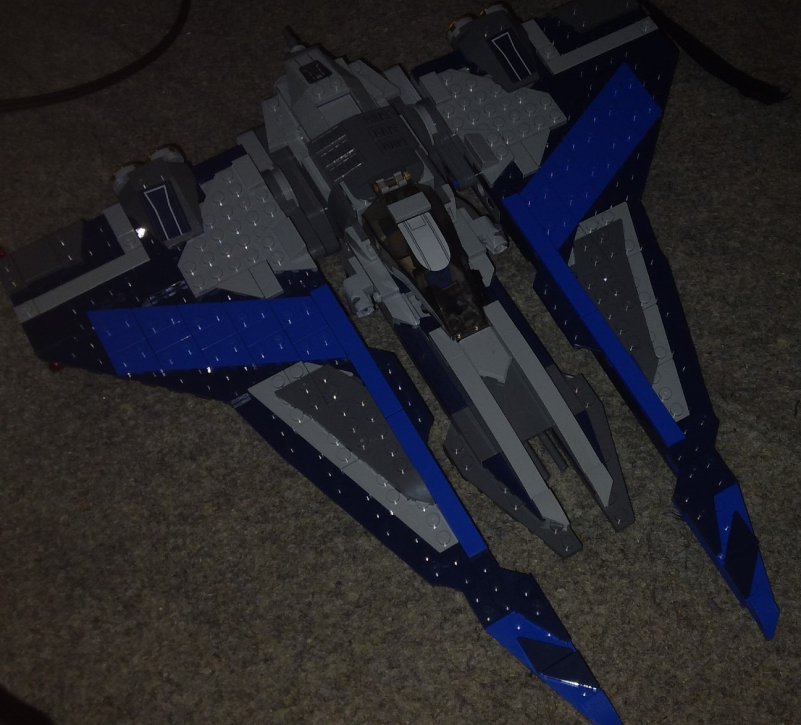
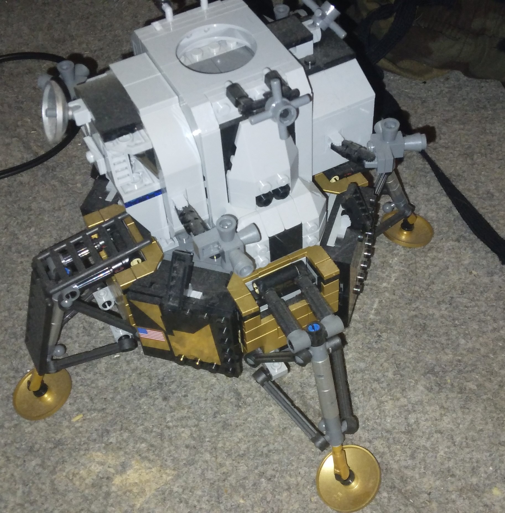

Spinny but clunky
The mandolrian figther is a new lego set based on the fighter shown in the later seasons of the clone wars,like many mandalorian craft there is a clear art to it which is reflected in its shape and overall design,the most standout feature that sets it apart from other starfighters is the ability of its wings to spin a full 360 degrees around the set. Alongside this like many of the new sets, it features the spring loaded flick fire which is much easier then the old method.However the real issue comes in how it feels quite clunky to hold and horizontally rotate the wings,Which is now issue if it's going to remain as a display piece but if your looking to use it i'd recommend that you be careful and slow.
Future reviews
Lunar lander 